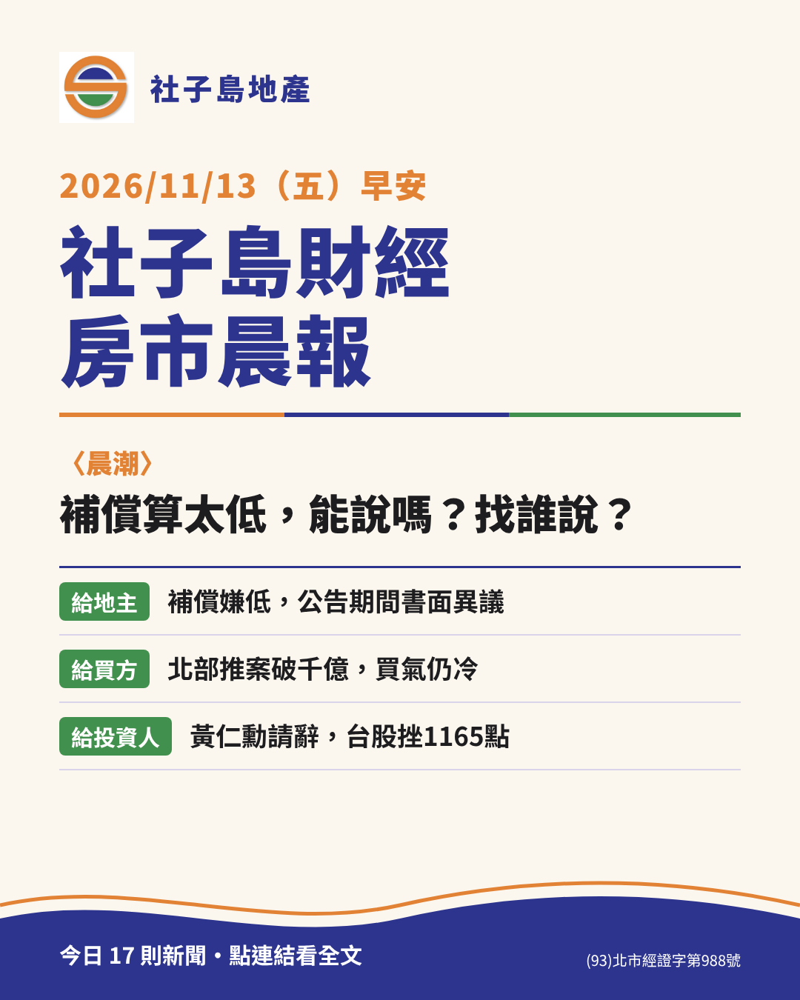

2026/11/13 (五) 早安
社子島財經房市晨報｜補償算太低，能說嗎？找誰說？
今日 17 則財經與房市新聞，依主題分成 7 類，社子島、主商圈與台北市的新聞排在最前面。點標題就能開啟原文。
〈潮汐表〉今天的三道潮水
- 給地主覺得補償算太低，可以講：公告期間內用書面向市府提出異議，不服再提地價評議委員會復議、行政救濟。社子島目前尚未公告。
- 給買方北部10月預售推案破千億、創4月以來新高，但指標案每週成交不到1組；台北近一年近六成交易是30年以上老屋。
- 給投資人黃仁勳請辭輝達執行長，台股12日重挫1,165點收43,091點；美股四大指數收黑，台積電ADR跌1.90%。
〈晨潮〉
補償算太低，能說嗎？找誰說？
昨天在坤天亭，阿公聽鄰居聊天，也跟著擔心起來，回頭問我們：「若是公告出來的補償，阮感覺算了傷俗，敢會當講？欲揣啥人講？」答案是：可以講，法律替地主留了一條路。只是要講在對的時間、用對的方式，講了才算數。
先弄清楚補償是怎麼算出來的。民國101年起，土地徵收改按市價補償，市價由市府依《土地徵收補償市價查估辦法》查估，再送地價評議委員會評定（11/10 我們談過）；房子、地上物、農作物則另有查估基準。所以「算太低」，可能是土地單價，也可能是房子、地上物漏列或量錯。先分清楚是哪一種，講起來才有力。
第一步，是書面異議。依《土地徵收條例》第22條，對公告的事項有意見，例如面積、權利人、地上物清冊，要在公告期間內，以書面向直轄市主管機關提出，在台北市就是市政府（地政局）；對補償價額有意見，同樣要用書面、在法定期限內提出，期限請以公告與書面通知上寫的為準。說明會上口頭抱怨、打一通電話，都不會留下紀錄；白紙黑字送進去，市府收到後要查明處理，並以書面回覆查處結果。
第二步，是復議。對市府的查處結果還是不服，市府可以把案子提請地價評議委員會復議。第三步，是行政救濟。對復議結果仍然不服，可以依法提起訴願、行政訴訟。
覺得補償太低：三步走
- ① 書面異議：公告期間內（補償價額依法定期限），以書面向市府提出
- ② 復議：不服市府查處，由市府提請地價評議委員會復議
- ③ 行政救濟：不服復議結果，依法提起訴願、行政訴訟
- 提醒：補償發給完竣後工程不停；價額變動的差額，結果確定後三個月內發給；抵價地申請另守期限
有兩件事要先放在心上。第一，補償費依法發給完竣之後，徵收計畫的執行不會因為異議或行政救濟而停止，道理可以繼續講，但拆遷與工程的時程不會停下來等。第二，如果經過復議或行政救濟，補償價額有變動，差額應在結果確定之日起三個月內發給，不會因為晚講就吃虧。還有，異議和申請抵價地是兩件事：抵價地要在公告期間內另外以書面申請（第40條），別因為忙著爭補償，錯過了選擇抵價地的期限。
一份有用的異議書，大概要有這幾樣：寫清楚地號、建號與權利範圍；指出哪一項您認為不對；附上理由與證據，例如房屋與地上物的照片、建物測量成果、稅籍與戶籍資料、附近的實價登錄成交；最後留下送件證明，掛號回執或收件章都好。案子複雜時，可以請地政士、不動產估價師或律師一起看。
社子島的區段徵收計畫還在內政部審議，尚未公告，補償價額也還沒有出來。現在最值得做的，是趁著房子、菜園、地上物都還在，先拍照、整理資料，將來核對清冊時才有依據。往下滑，有黃仁勳請辭、北士科總部受關注的新聞，以及北部預售推案破千億卻買氣冷的消息；最後在〈廟口泡茶區〉，我們等您來電。
——社子島地產團隊
主商圈：社子島・北士科・關渡洲美平原3 則
輝達執行長黃仁勳12日請辭，外界關注北士科T17、T18台灣總部後續；輝達表示營運與客戶承諾不因交接中斷，北士科總部目前沒有官方變更消息。社子島計畫仍在內政部審議，關渡洲美平原本週無新進度
台北市1 則
永慶依實價登錄統計，近一年台北市住宅交易8,663件，屋齡30年以上占約57%，新、舊屋總價差逾700萬元
市地重劃・區段徵收2 則
苗栗竹南頭份「整開四」市地重劃12日動土，約3.12公頃公設保留地解編、還地於民，隆恩圳水岸綠廊同步施作
房市走向4 則
住展統計北部10月預售推案破千億、創4月以來新高，南港大案拉高案量，但指標案每週來客約10組、成交不到1組；新北板橋TOD板新站開發案開工
稅務與法律實務2 則
遺產及贈與稅法第6條9月修正：被繼承人死亡前2年內贈與特定親屬的財產，改由受贈人按比例負擔遺產稅；媒體推估明年贈與稅免稅額將調升至273萬元、遺產稅免稅額1,492萬元（以財政部公告為準）
利率・房貸・資金1 則
美國12月升息預期升溫，新台幣12日收32.889元、貶2.9分，終止連二升
今日財經大事4 則
黃仁勳請辭衝擊AI股：台股12日重挫1,165點收43,091點，三大法人仍小幅買超51.6億元、外資連11賣；美股週四四大指數收黑，輝達跌4.34%，台積電ADR跌1.90%
- 三大法人買超台股51.6億元相關報導
〈阿公講古〉
週五早上，阿公走到威靈廟，廟前榕樹下已經有人擺好棋盤。
「原來毋是講講就算，愛寫字、愛照時間，」阿公點點頭：「親像以早去農會辦代誌，有蓋印才算數。」
下棋的阿伯說，聽講北士科那間大公司的頭家換人了。阿公笑說，孫仔講公司照常上班，叫他免煩惱。
說著，阿公望向廟旁鄰居的菜園，幾欉果子樹正結果，又想到一件事：「厝有補償，毋過阮這片菜、這幾欉果子樹，拆的時陣敢嘛有補償？是按怎算的？」
阿公的問題，我們明天回答。
〈廟口泡茶區〉
阿公從威靈廟慢慢走到廟口，榕樹下的茶已經泡好了。補償怎麼算、異議書怎麼寫，都可以坐下來一起看。
市地重劃也好、區段徵收也好，地會變成什麼樣子、能分回多少、補償合不合理，我們陪您從計畫書和公告開始讀起。
想問問您：家裡的房子、菜園、地上物，您拍過照、整理過資料了嗎？打個電話告訴我們，要從哪裡開始整理，我們一起想。
不急著成交。我們是守在堤邊的人，守著每一塊土地的權益，直到把它交到願意耕耘它的人手上。
📞 歡迎先來電 0922-252-969先通個電話聊聊，再約時間來廟口喝茶。
 掃描 QR code，加 LINE 好友LINE ID：@shezidao💬 加 LINE
掃描 QR code，加 LINE 好友LINE ID：@shezidao💬 加 LINE
社子島地產團隊｜service@shezidao.com.tw
台北市士林區延平北路九段288號
週一至週六 9:30–18:00（週四 9:30–13:30），週日公休📞 來電 0922-252-969
本站由社子島地產開發有限公司經營，為民間不動產資訊網站，非臺北市政府官方網站；政府公告請以臺北市政府與地政局網站為準。
本期新聞由社子島地產團隊自Yahoo奇摩新聞、自由時報、經濟日報、聯合新聞網、中時新聞網、三立新聞網、安傳媒、鉅亨網、Yahoo股市、中央社 等來源收集，標題照原文，點擊即可開啟原始報導；法規說明僅供參考，實際權利義務以主管機關公告為準。〈晨潮〉〈阿公講古〉為本團隊之參考意見，不構成投資建議，亦不代表支持任何候選人。〈阿公講古〉的阿公，是我們依島上長輩的身影寫成的人物。